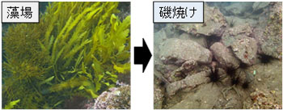
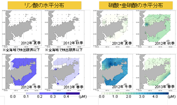
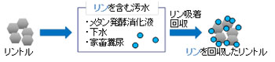
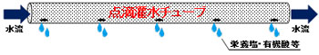
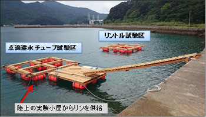

Toda Lab Project Soka University Faculty of Engineering
研究プロジェクト
長崎県新上五島町における磯焼け対策実証実験（2014年度～2016年度）
温帯域から寒帯域にかけての沿岸岩礁地帯には、通常、波打ち際から数10 mまでの範囲に海藻類が繁茂します。それらの海藻藻場は仔稚魚の餌場や隠れ家となり、仔稚魚期における生存率を維持することで水産資源の保護に貢献してきました。ところが近年、日本沿岸の多くの海域でこれらの藻場が減少、衰退する「磯焼け」が大きな問題となっています。

藻場と磯焼け
東シナ海に位置する長崎県新上五島町においても深刻な磯焼けが進行しています。磯焼けの主要な原因としては、①温暖化（高水温）、②貧栄養化、③食害、④沿岸改変などが考えられています。本研究室では新上五島町周辺海域において、周年の栄養塩調査を行い、夏から秋にかけてリン酸が枯渇していることを明らかにしました（戸田 2013, 新上五島町周辺海域における栄養塩調査報告書）。そこで、新上五島町からの委託事業（2014年度～2016年度）として、本海域において栄養塩施肥による磯焼け対策実証実験を行うこととなりました。

新上五島町周辺海域におけるリン酸塩濃度、硝酸+亜硝酸塩濃度の時空間変動
栄養塩源として、町内の生活排水中の豊富なリンを有効利用し、海藻培養を行います。これにより、藻場再生や漁業生産力を向上させ、陸と海を繋ぐ持続的な栄養塩循環を促し、現代版里海創成につながると考えています。

本プロジェクトにおける陸と海を繋ぐ栄養塩循環の概要
栄養塩を海洋に施肥する際、気を付けなければならないことは、栄養塩の供給方法です。急激な栄養塩負荷は、増殖速度の速い植物プランクトンの大増殖を引き起こし、赤潮を発生させかねません。そこで、2つの栄養塩供給方法を考案しました（特許出願中）.
一つは、高機能リン吸着材（リントル）の活用です。リントル（太平洋セメント社製）とは、リン回収能力、操作性に優れた、非晶質ケイ酸カルシウム系のリン吸着材です。このリン吸着材のメリットは、1) 回収後の吸着材をそのまま肥料として使用可能で、使用後に残渣がほとんど残らないことと、2) リンの緩やかな溶出が行える（遅効的供給）ことです。

リントルの概要
もう一つは、点滴灌水システムの利用です。一滴ずつゆっくりと灌水する点滴灌水は、もともと農業に使用されていた方法ですが、本プロジェクトではこれを海洋施肥へと応用しました。この供給方法は、1) 必要な個所に集中して灌水可能で、栄養成分の海水中への拡散を防ぎ、2) 吐水量・点滴時間を調整でき、液体肥料の効率的な供給が可能となります。

点滴灌水チューブの概要
これらの供給方法を用いた新規の海藻培養システムを考案・作成し、新上五島町の現場海域にリントル試験区、点滴灌水チューブ試験区として2基の実験筏を設置しました。そして、2014年10月より実証実験を開始しました。現在、システムを運転しながら、藻類生長の測定とともに、環境モニタリングを行っています。

新上五島町内の現場海域に設置した実験筏
本プロジェクトは、産学官民一体となって実施しています。新上五島町を中心として、創価大学工学部、長崎大学水産学部、太平洋セメント（株）、三洋テクノマリン（株）、漁業者・漁民、一般町民・民間、長崎県五島振興局、TAMA-TLO（特許技術移転）が参画しています。研究体制として、創価大学工学部は栄養塩供給システムの設計・運転・評価を、長崎大学水産学部は微生物群集動態解析や藻場生産性評価を、太平洋セメント（株）はリン回収実施・評価を、三洋テクノマリン（株）は試験補助ならびに海藻生育状況評価を行います。

本プロジェクトにおける実施体制
本実証実験がテレビや新聞で紹介されました。
- 2014年6月26日付 長崎新聞
- 2014年9月17日付 夕刊読売新聞九州版
- 2014年10月18日付 長崎新聞
- 2014年10月30日放送分 長崎文化放送
- 2014年12月25日付 長崎新聞